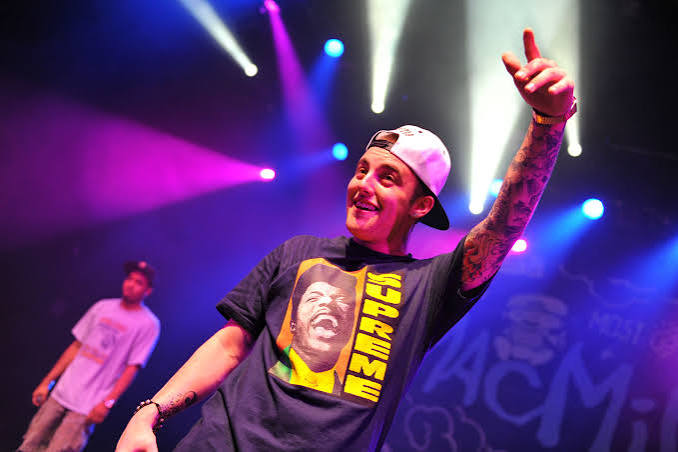

Released: March 11, 2011
Label: Rostrum Records
Primary Production: Handled mainly by ID Labs, with production contributions from Just Blaze, Chuck Inglish, Sap, and Khrysis.

The melody for Mac's breakout single "Donald Trump" was built on a sample of Sufjan Stevens' song "Vesuvius". When Rostrum Records sought to clear the sample after the song blew up, Stevens cleared it completely free of charge—only asking for a percentage of sync licensing royalties.
Before Donald Trump entered politics, he praised Mac on YouTube when the "Donald Trump" music video hit 20 million views, calling Mac "the new Eminem". However, as the song hit Platinum status, Trump publicly flipped, demanding royalties on Twitter and threatening legal action. Mac responded by noting he was just using Trump as a symbol of wealth and could have easily named the song "Bill Gates".


Over 20,000 fans tuned in live on Ustream to watch Mac launch the tape in real-time, which temporarily crashed DatPiff's servers due to downloading traffic.